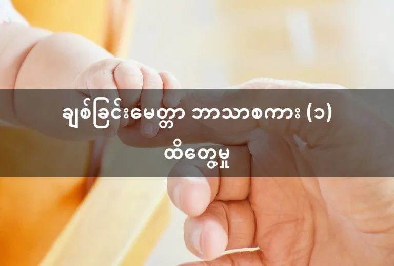
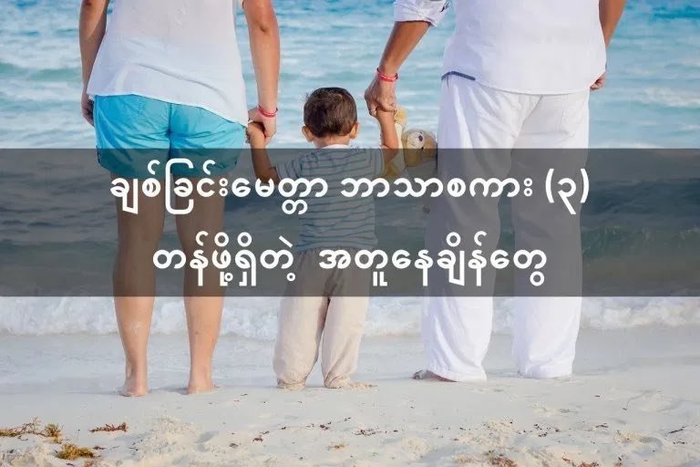

သင့်ကလေးကို သင်ချစ်သလား။
ချစ်တာပေါ့ မချစ်ပဲ နေပါ့မလား၊ ကိုယ့်ကလေးပဲဟာကို။ နေ့တိုင်းလဲ သားသားကို၊ မီးမီးကို မေမေဖေဖေက ဘယ်လောက် ချစ်ကြောင်း ပြောရတာ မရိုးနိုင်အောင်ပဲ။
ဒါဆို သင်ချစ်ကြောင်း သင့်ကလေး တကယ် သိနားလည်ရဲ့လား။ သင့်အချစ်ကို သင့်ကလေး တကယ်ပဲ ခံစားသိရှိသလား။
ကလေးငယ်တွေအတွက် ချစ်ခြင်းမေတ္တာဟာ အရေးကြီးပါတယ်။ ငယ်စဉ်မှာ မိဘရဲ့ ချစ်ခြင်းမေတ္တာကို ခံစားရတဲ့ ကလေးတွေဟာ ဘဝမှာ အောင်မြင်မှုတွေရဖို့ အခွင့်အလမ်း ပိုများသလို ဘဝတစ်လျှောက်မှာ ပျော်ရွှင်စွာ နေထိုင်နိုင်တတ်ကြပါတယ်။ ငယ်စဉ်က ချစ်ခြင်းမေတ္တာကို ကောင်းစွာ မခံစားရတဲ့ ကလေးတွေဟာ အသက်ကြီးလာတဲ့ အခါ လူအများနဲ့ အဆင်ပြေအောင် ပေါင်းသင်းနိုင်မှုစွမ်းအား နည်းကြပြီး ဘဝမှာ ပျော်ရွှင်မှုကိုလဲ ကောင်းစွာ အခံစားရတတ် ကြပါဘူး။
ကလေးငယ်တစ်ယောက်ကို မိဘက ချစ်တယ်လို့ ပါးစပ်က ပြောရုံနဲ့ ကလေးက နားလည်မယ်၊ မိဘရဲ့ ချစ်ခြင်းမေတ္တာကို ခံစားရမယ်လို့ တစ်ထစ်ချ မှတ်ယူလို့ မရပါဘူး။ ကလေးကို သူလိုချင်တာတွေ အကုန်လုပ်ပေးရုံ၊ သူလိုချင်တာအားလုံး ဝယ်ပေးရုံနဲ့လဲ ကလေးက မိဘရဲ့ ချစ်ြခင်းမေတ္တာကို ခံစားရချင်မှ ခံစားရမှာပါ။ မိဘရဲ့ ချစ်ခြင်းမေတ္တာကို ကလေးက ခံစားနားလည် သိရှိဖို့ဆိုရင် သူတို့နားလည်တဲ့ ဘာသာစကားနဲ့ ပြောမှ ကလေးက နားလည်မှာပါ။ ကလေးနားလည်တဲ့ ချစ်ခြင်းမေတ္တာ ဘာသာစကား ငါးမျိုးရှိပါတယ်။ ကလေးတစ်ယောက်နဲ့ တစ်ယောက် နားလည်တဲ့ ဘာသာစကား မတူညီတဲ့ အတွက် ကလေးတစ်ယောက်ချင်းစီကို သူနားလည်တဲ့ ချစ်ခြင်းမေတ္တာ ဘာသာစကားနဲ့ ပြောဖို့လိုပါတယ်။
ချစ်ခြင်းမေတ္တာ ဘာသာစကား (၁)။ ထိတွေ့မှု
ကလေးအများစု နားလည်တဲ့ ချစ်မေတ္တာ ဘာသာစကားကတော့ ထိတွေ့မှုပါ။ ထိတွေ့မှုဆိုတာမှာ ကလေးကို မိဘက ယုယထွေးပွေ့တာ၊ ပွေ့ဖက်တာ၊ နမ်းရှုံ့တာ အစရှိတာတွေ အကုန်ပါပါတယ်။ ကလေးငယ်ငယ်မှာ မိဘက ကလေးကို ယုယုယယ ချီပိုးတာ၊ မွှေးမွှေးပေးတာတွေဟာ ချစ်မေတ္တာကို ကလေးနားလည်တဲ့ ဘာသာစကားနဲ့ ပြဆိုတာပါပဲ။ မိဘ အတော်များများဟာ ကလေးနည်းနည်း ကြီးလာရင် ကိုယ့်ကလေးကို ယုယုယယ ထွေးပွေ့ဖို့ မေ့လျှော့ သွားကြပါတယ်။ အချို့မိဘတွေကလဲ ငွေရှာတဲ့ အလုပ်ပဲ လုပ်နေတော့ ကလေးကို ပွေ့ဖက်နမ်းရှုံ့ဖို့ အချိန်မရ ကြပါဘူး။ ဒီအခါ ကလေးက သူ့ကို မိဘလုပ်သူက မချစ်ဘူးလို့ ထင်သွားနိုင်ပါတယ်။ ဒါ့ကြောင့် အချိန်မရတဲ့ ကြားကနေ ကိုယ့်ကလေးကို ယုယုယယ ထွေးပွေ့ဖို့ မမေ့ပါနဲ့။
ချစ်ခြင်းမေတ္တာ ဘာသာစကား (၂)။ အားပေးချီးမြှောက်တဲ့ စကားလုံးတွေ
မိဘက ကိုယ့်လုပ်ရပ်ကို အားပေးတဲ့စကားပြောတာ၊ ချီးမွမ်းတာလောက် နားဝင်ချိုတဲ့ စကား ကလေးတွေမှာ မရှိပါဘူး။ ကိုယ့်ကြိုးပမ်းအားထုတ်မှု မအောင်မြင်ရင်တောင်မှ မိဘက အားပေးစကားပြောရင် ကလေးက အားတက်ပြီး ကြိုးစားချင်စိတ် ဖြစ်လာပါတယ်။ ဒါ့ကြောင့် ကလေးရဲ့ ကြိုးပမ်းအားထုတ်မှုကို အားပေးဖို့၊ ထုတ်ဖေါ်ချီးမွမ်းဖို့၊ မအောင်မြင်ရင်လဲ အားပေးစကား ပြောဖို့ ဘယ်တော့မှ မမေ့ပါနဲ့။ဆက်စပ်ဆောင်းပါးများ
သင့်ကလေးကို အလိုလိုက်တာ များနေပြီလား
ကလေးကိုယ့်စကား နားထောင်အောင် လေ့ကျင့်ပေးဖို့
ချစ်ခြင်းမေတ္တာ ဘာသာစကား (၃)။ တန်ဖို့ရှိတဲ့ အတူနေတဲ့ အချိန်တွေ
ကလေးလုပ်တဲ့ သူအတွက် မိဘက ကိုယ့်အတွက် သီးသန့် အချိန်ပေးပြီး ကိုယ်နဲ့ အတူ ရှိတဲ့ အချိန်၊ အတူကစားတဲ့ အချိန်တွေဟာ အလွန်တန်ဖို့ရှိတဲ့ အချိန်တွေပဲ ဖြစ်ပါတယ်။ မိဘက အလုပ်များလို့ ကလေးကို ကလေးထိန်းနဲ့ ပစ်ထားရတာတွေ၊ ကလေးက ကိုယ်နဲ့ ကစားချင်ပေမယ့် ကိုယ်က အလုပ်များလို့ ကလေးကို ငြင်းလွှတ်လိုက်ရတာတွေကို ကလေးက မေမေ၊ ဖေဖေက ငါ့ကို မချစ်ဘူးလို့ အထင်ရောက်သွား တတ်ပါတယ်။ ဒါ့ကြောင့် ဘယ်လောက်ပဲ အလုပ်ရှုပ်နေပါစေ၊ ကလေးနဲ့ တစ်နေ့ကို အချိန် တစ်ခု သတ်မှတ်ပြီး ကလေးအတွက် အချိန်ပေးပါ။ ကလေးအသက် ကြီးသွားတဲ့ အချိန်ကျရင် ဒီလို တန်ဖိုးရှိတဲ့ အချိန်တွေ အစားပြန် မရနိုင်တော့ဘူးဆိုတာကို မမေ့ပါနဲ့။
ချစ်ခြင်းမေတ္တာ ဘာသာစကား (၄)။ လက်ဆောင်
ကလေးကို လက်ဆောင်လေးတွေ ပေးတာ (အရုပ်လေးတွေ၊ စာအုပ်လေးတွေ အစရှိသဖြင့်) ဟာလဲ ကလေးကို မိဘက ချစ်တယ်ဆိုတာ ဖော်ပြခြင်း တမျိုးပဲ ဖြစ်ပါတယ်။ အရုပ်အသစ်လေး ရတဲ့ အချိန်မှာ ကလေးရဲ့ မျက်နှာမှာ ဖြစ်ပေါ်လာတဲ့ ပျော်ရွှင်မှုဟာ အလွန် တန်ဖိုးရှိပါတယ်။ သတိထားရမှာကတော့ လက်ဆောင်ချည်းပဲ ဝယ်ပေးပြီး အခြားသော ချစ်ခြင်းရဲ့ ဘာသာစကားတွေကို မေ့လျော့မထားဖို့ပဲ ဖြစ်ပါတယ်။ချစ်ခြင်းမေတ္တာ ဘာသာစကား (၅)။ ကလေးအတွက် လုပ်ပေးတဲ့ အရာလေးတွေ
ကလေးကို ယုယုယယ ထမင်းခွံ့ ကျွေးတာ၊ ရေချိုးပေးတာ၊ အစရှိတဲ့ လုပ်ဆောင်ပေးမှု လေးတွေဟာ ကလေးအတွက် မိဘရဲ့ ချစ်မေတ္တာကို ခံစားရတဲ့ အချိန်တွေပဲ ဖြစ်ပါတယ်။ ဒီလို သာမန် အသေးအမွှား လေးတွေဟာ ကလေးအတွက်တော့ ချစ်ခြင်းရဲ့ စကားလုံးတွေပဲ ဖြစ်ပါတယ်။ အချိန်မအားလို့ ကလေးထိန်းနဲ့ ထားရသည့်တိုင်အောင် မိဘလုပ်သူက အချိန်ပေးနိုင်သလောက် ကလေးရဲ့ လိုအပ်ချက်တွေကို လုပ်ဆောင်ပေးဖို့ လိုပါတယ်။ နောက်ဖေးတည်တာ၊ ရေချိုးပေးတာ အစရှိသဖြင့် အချိန်ရသလောက် လုပ်ဆောင်ပေးတာဟာ ကလေးကို မိဘက ဘယ်လောက် တန်ဖိုးထား ချစ်မြတ်နိုးတယ် ဆိုတာ ပြဆိုခြင်း ပဲ ဖြစ်ပါတယ်။ချစ်ခြင်းမေတ္တာ ၏ ဘာသာစကား (၅) မျိုး | Cuddle Me to Read ကို ခွင့်ပြုချက်ဖြင့် ပြန်လည် ဖော်ပြခြင်း ဖြစ်ပါသည်။